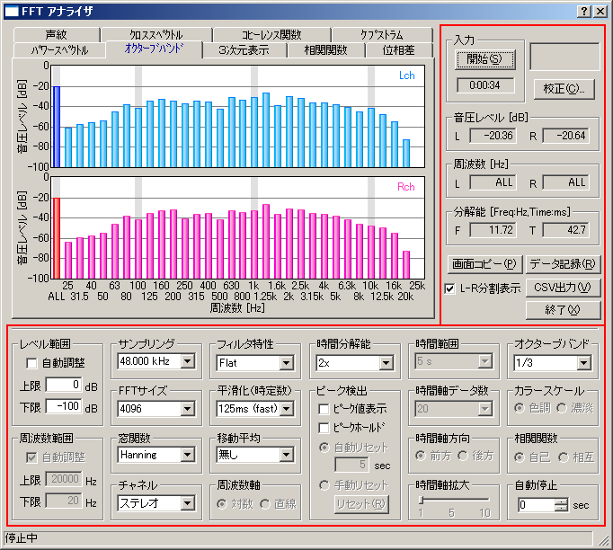

DSSF3 > RA > リファレンス > FFTアナライザ

| 項目 | 説明 |
|---|---|
| 入力 | [開始]ボタンで測定を開始します。 ストップウォッチ機能があり、[開始]ボタン押下時より時間カウントを開始し、[開始]ボタンの下にあるスペースに表示されます。測定終了時までカウントされます。 |
| 校正 | クリックするとマイク校正画面が開きます。使用するマイクロホンの校正データの選択、編集、保存を行います。 →3-3．マイク校正画面 |
| 音圧レベル |
エネルギーレベルをL（＝左）とR（＝右）それぞれ表示します。（dB）
オクターブバンド分析の周波数帯域上の棒グラフを選択してマウスで左クリックすると、その棒グラフが濃い色に変わり、選択されます。以降その周波数帯域の音圧レベルを表示することができます。右クリックするか、ALLの周波数の棒グラフを選択すると、全周波数帯域の音圧レベルを表示します。
|
| 周波数 | たとえばピークを指定して、測定すると、音圧レベルがピーク(最大）の周波数をL（＝左）とR（＝右）それぞれ表示します。（Hz）、現在選択されている周波数を表示する。 |
| 分解能 |
分解能を表示します。FFTサイズとサンプリングレートによって決まります。
F： 周波数（Hz）
T： 時間（ms）
|
| 画面コピー | 画面のスナップショット機能です。ボタンをクリックした時点のグラフウインドウを別ウィンドウで表示します。測定中にスナップショットとして、測定画面だけの小WindowをべつＷｉｎｄｏｗとして並べていくらでもすきなだけ作れます。これは画像を取り込むにしても、測定中に測定画面を選択して選ぶにしても、非常に便利です。リアルタイムアナライザーは測定画像が測定中動いていますので、適当な画像を保存するとしても、スナップショットで、たくさんの中から選択してできるのと、クリップボードに取り込んだ画面で保存してから、選択するのでは、手間に違いがあります。また保存する目的がデータ比較である場合、スナップショットの場合は、一度にたくさんの測定画像を比較表示できます。 |
| データ記録 |
オクターブバンド分析のときにクリックするとデータ記録画面が開き、指定した間隔でオクターブバンドの測定データを記録し、CSV形式で保存できます。
|
| CSV出力 | 現在表示されているデータを、CSV形式でファイルに保存します。 |
| L-R分割表示 | 2CH表示時（チャネルでステレオ選択時）にここをチェックすると、それぞれのチャネルを上下2つの画面に別々に表示します。 |
| 終了 | 「リアルタイムアナライザー」を終了します。 |
| 項目 | 説明 |
|---|---|
| レベル範囲 | 縦軸の音圧レベルの表示範囲を入力します。自動をチェックすると、適切な表示範囲が自動的に設定されます。 |
| 周囲数範囲 | 横軸の周波数の表示範囲を入力します。自動をチェックすると、適切な表示範囲が自動的に設定されます。 |
| サンプリング | A/Dコンバータのサンプリング周波数を設定します。 |
| FFTサイズ | FFT （fast Fourier transform：高速フーリエ変換）のブロックサイズを選択します。ここで指定したデータサイズ毎にFFT計算を行います。大きくすると、周波数分解能が上がりますが、時間分解能は下がります。小さくするとその逆となります。デフォルトの設定値で使うか、音響測定入門など、測定例を参考にして下さい。 |
| 窓関数 |
不要なスペクトルを減衰させるための窓関数を選択します。以下の種類の窓関数から目的に合ったものを選択してください。
Rectangular： 方形窓
Triangular： 三角窓
Hamming： ハミング窓
Hanning： ハニング窓
Blackman： ブラックマン窓
Blackman-Harris： ブラックマン-ハリス窓
|
| チャネル |
モノラル： サウンドカードのモノラルモードで入力される信号を測定します。
ステレオ： Lチャンネル（水色）とRチャンネル（ピンク）を測定します。
左（Ｌ）のみ：左チャンネルを表示します。
右（Ｒ）のみ：右チャンネルを表示します。
差分（Ｌ-Ｒ）：左右のチャンネルの差分を表示します。
※サウンドカードの仕様によっては、モノラルモードの時に左右の信号が混合される場合があります。そのため、左右のどちらか一方を測定する場合は、モノラルモードではなく、左（Ｌ）のみ、右（Ｒ）のみ、をご使用ください。
|
| フィルタ特性 |
聴感補正特性（Flat, A/B/C特性）を選択します。
フィルタを使用しない場合は、フラットを選択してください。騒音計として使用するときは通常A特性を使用します。
|
| 平滑化(時定数） | 平滑化係数を時定数（ms, s）として設定します。騒音計の規格であるfast（125ms）/slow(1s）を選択すれば、騒音計と同じように動作します。 |
| 移動平均 | 選択した秒数で移動平均を行います。「無限」を選択すると、測定中の全データを平均したものを表示します。 |
| 周波数軸 |
周波数軸の目盛りの設定します。
対数目盛り： 比が一定で表示されます。
線形目盛り： 差が一定で表示されます。
|
| 時間分解能 |
リアルタイム表示の表示速度を指定するものです。リアルタイム表示のリフレッシュレートを下記より選択します。
1x： 標準
2x： 標準の2倍
4x： 標準の4倍
8x： 標準の8倍
|
| ピーク検出 |
ピーク値表示： ピーク周波数を青色（ステレオチャネル選択時は青色と赤色）で表示します。
ピークホールド：ピーク値を一定時間保持します。
「手動リセット」を選択すると、「リセット」ボタンを押すまでピークホールドし、「自動リセット」を選択すると、指定した時間のあいだピークホールドします。
|
| 時間範囲 | 声紋表示で、横方向に表示する時間の範囲を選択します。 |
| 時間軸データ数 | 3次元表示のときの時間軸方向の表示データ数を選択します。 |
| 時間軸方向 | 3次元表示のときの時間軸の方向を選択します。 [前方]を選択すると画面前方へ、[後方]を選択すると後方へ時間移動する。 |
| オクターブバンド | オクターブバンド表示のときに、オクターブあたり分割サイズを1/1、1/3、1/6、1/12、1/24から選択します。 |
| カラースケール | 声紋表示で、音圧レベルに対応するスケールをカラーで表示するか、モノクロの階調で表示するかを選択します。 |
| 相関関数 |
自己： 自己相関を表示します。
相互： 相互相関を表示します。
下にある「拡大」スライダを移動させることにより、時間軸について適当なスケールにズームすることが可能です。
|
| 自動停止 | 測定を開始してから指定した秒数が経過すると、自動的に停止します。0を設定した場合は、停止ボタンをクリックするまで停止しません。 |
|
[ヒント]ボタン：クリックして、ヒントを表示する場所にマウスを移動し再度クリックすると、ヒントを表示します。
[閉じる]ボタン：クリックするとそのウインドウを閉じます。
|
DSSF3 > RA > リファレンス > FFTアナライザ